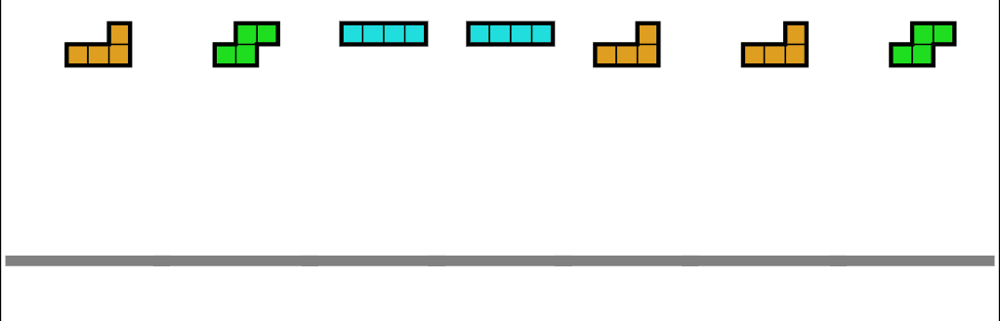

Introducción al coreano para hispanohablantes
¿Por qué este curso?
Este curso nace de mi sueño de crear una oportunidad para los hispanohablantes interesados en aprender coreano desde cero. Después de dos años de estudio del idioma, me di cuenta de la falta de recursos lingüísticos que ofrecieran una metodología práctica para abordar el aprendizaje de este idioma y la mentalidad necesaria para lograrlo. Este curso surge como respuesta a esa necesidad.
Objetivos del Curso:
- Proporcionar una visión general del coreano y del enfoque mental necesario para aprender este idioma aglutinante, destacando la importancia de adoptar una mentalidad abierta y positiva para lograr una adquisición efectiva del idioma, y ofreciendo herramientas mentales prácticas para un aprendizaje futuro más efectivo.
- Introducir el Hangul, el sistema de escritura coreano, y descubrir las reglas esenciales de escritura y lectura.
- Facilitar los futuros procesos de aprendizaje de los estudiantes y contribuir significativamente a su comprensión del idioma coreano en general.

Nivel necesario: Principiante (Nivel 0)
Este curso está diseñado para aquellos que quieren o están comenzando su viaje en el aprendizaje del coreano.
Contenido
Tema 1: Introducción al idioma coreano
- Introducción al coreano y su sistema de escritura:
- Breve introducción al idioma coreano.
- Sistemas de escritura Hangul.
- 한자 ("Hanja"): caracteres chinos llamados sino-coreanos.
- 한글: La gran escritura. 한 (grande) + 글 (escritura).
- Conceptos básicos para comprender el idioma coreano desde cero:
- Idioma aglutinante: Concepto y comportamiento.
- Formación de palabras y estructura gramatical en el coreano aglutinante.
- Ejemplos de aglutinación en la construcción de palabras y frases en coreano.
- Estructura de las frases en coreano:
- Descripción de la estructura básica de las frases en coreano.
- Construcción de oraciones simples y complejas en coreano.
- Ejemplos prácticos para comprender la estructura de las frases en diferentes contextos.
- Partículas y terminaciones verbales, y diferencias entre el lenguaje oral y escrito en coreano:
- Introducción a las partículas gramaticales en coreano y su función en la estructura de las frases.
- Uso de las partículas para marcar el sujeto, objeto, tiempo, ubicación, etc.
- Importancia de las terminaciones verbales en la conjugación de los verbos en coreano.
- Análisis de las diferencias en la gramática, vocabulario y estilo entre el lenguaje oral y escrito en coreano.
Tema 2: Hangul, el alfabeto coreano
- Creación de las vocales:
- Introducción al sistema de escritura coreano (Hangul) y su simbolismo.
- Las 6 vocales simples, 4 vocales iotizadas y 4 vocales compuestas.
- Los 7 diptongos en coreano.
- Creación de las consonantes:
- Representación de las consonantes en Hangul según la forma de los órganos fonéticos.
- 14 consonantes simples, 5 dobles y 11 complejas.
- Bloques silábicos y la importancia de la última consonante 받침 ("batchim"):
- Descripción de la estructura de los bloques silábicos.
- Reglas básicas para formar las sílabas en coreano.
- Colocación de la última consonante (받침) en los bloques silábicos.
Tema 3: Fundamentos de gramática coreana
- Verbos de acción y verbos descriptivos:
- Verbos de acción (V) y
- verbos descriptivos (A).
- Niveles de cortesía y los honoríficos:
- Cortesía hacia el hablante.
- 존댓말 (lenguaje formal) - 반말 (lenguaje informal).
- Formas de conjugación 아요. 어요. 해요. (informal), 아. 어. 해. (informal), ㅂ니다. 습니다 (formal).
- Cortesía hacia la persona de la que se habla: los honoríficos.
- Verbos honoríficos especiales.
- Resto de verbos.
- Sustantivos.
- Conectando frases:
- Uso de partículas y
- conectores.
- Los 4 Tipos de frases: declarativas, interrogativas, imperativas y propositivas.
- Descripción y ejemplos de cada tipo de frase.
- Ejemplos con presente, pasado, futuro y gerundio.
- Ejemplos de oraciones utilizando diferentes tiempos verbales.
- Cortesía hacia el hablante.
Tema 4: Conceptos clave para avanzar en coreano
- Partícula 은/는 vs 이/가. Uso y diferencia entre estas partículas gramaticales.
- Verbo ser (partícula)
- Verbo estar, existir, haber o tener.
- Números y contadores: Uso de números cardinales y ordinales.
- Fechas: Formas de expresar días, horas y fechas en coreano.
¡Estoy emocionado de compartir contigo mi visión del coreano y agradezco mucho cualquier comentario que tengas! ¡Gracias por tu tiempo!
@aprendiendo_a_aprender_coreano